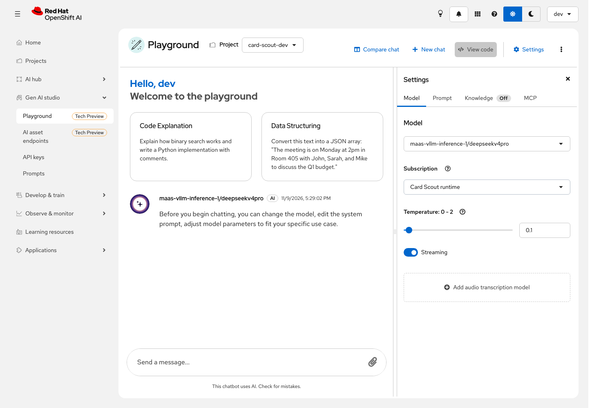
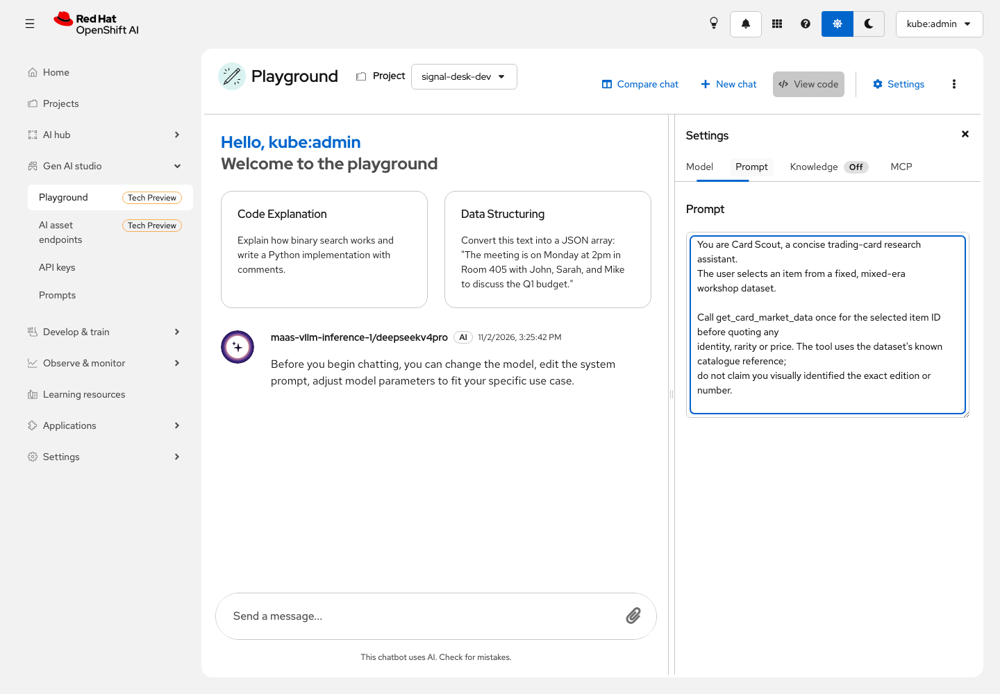
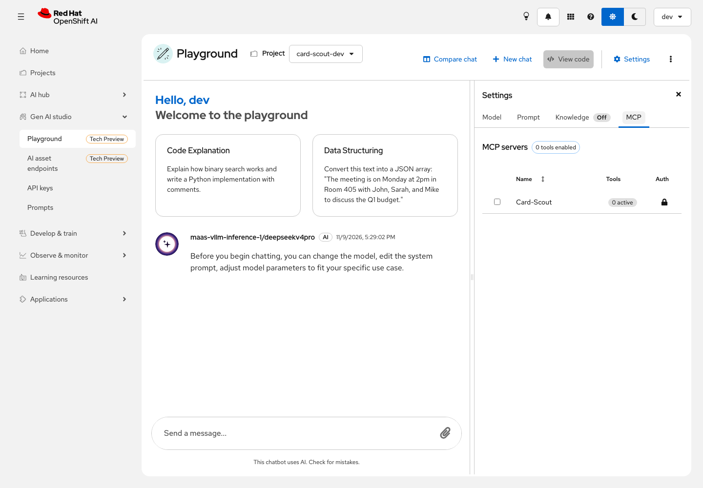
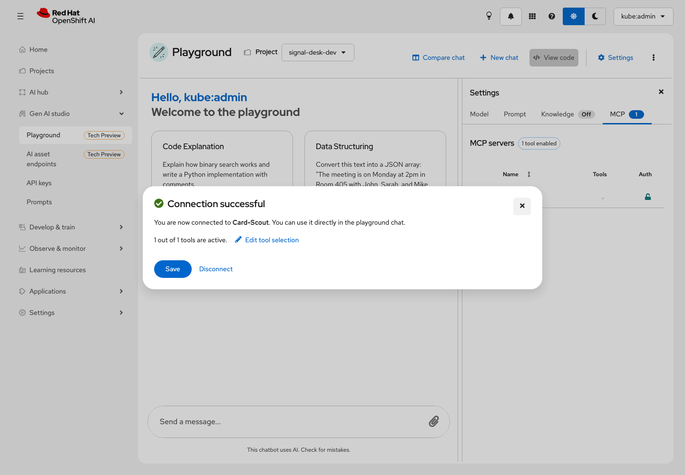
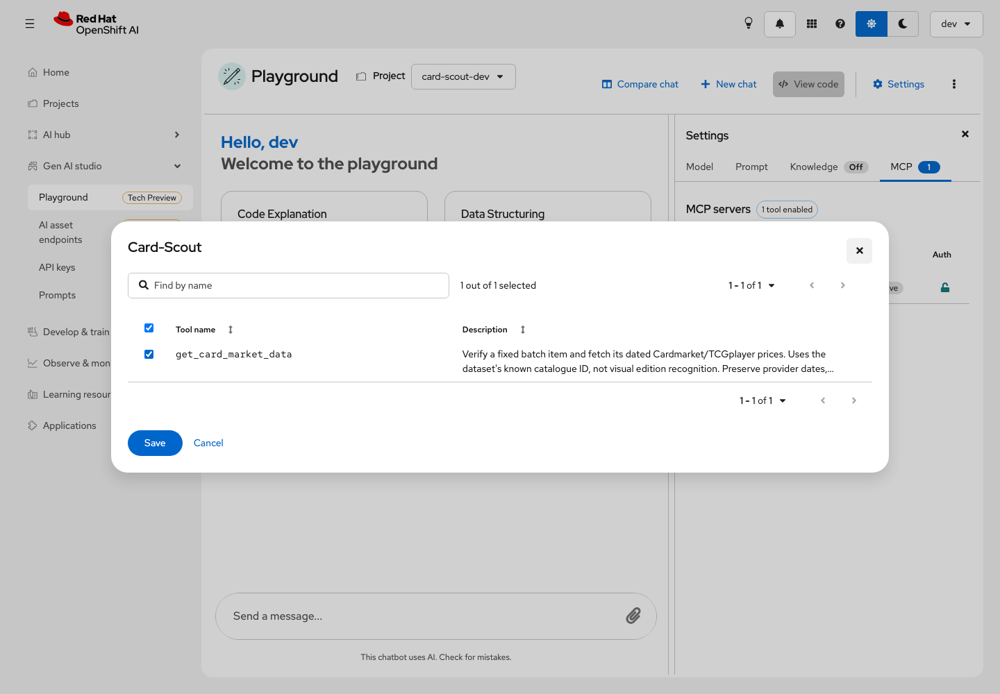
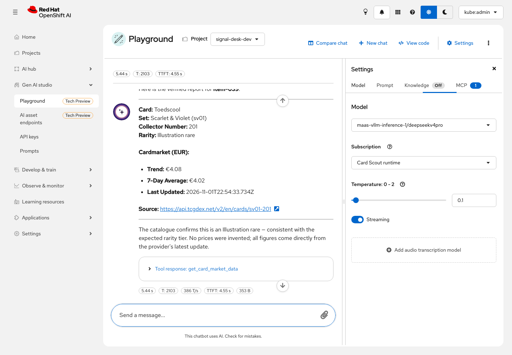

Lab 3.2 — AgentOps: Tools, Traces and Evidence
|
Review preview — PR 32, not the published workshop.
This page comes from commit |
Goal
Follow a price lookup through its MLflow trace, then test the same tool in the OpenShift AI Playground. Verify the catalogue reference and dated source behind the answer.
Follow one price check
In Card Scout, click Check price on an analyzed Pokémon card, then open its
View MLflow trace link. The link selects workspace card-scout-dev, experiment
card-scout and that exact trace.
Open Details & Timeline → Graph. Expect card.research, agent.responses and
tool.get_card_market_data. Select Inputs / Outputs: verify the selected item,
exact catalogue ID, edition/number, rarity, provider currency, update timestamp
and returned prices. The model span records the visible response and reported
usage. Provider headers, keys and hidden reasoning are excluded.
Batch traces contain cards.analyze_batch and individual d3.classify_card
spans. Image hashes and the rubric are recorded; raw image bytes are omitted.
Inspect an uncertain or incorrect classification rather than assuming a high
probability guarantees correctness.
The app’s numeric price fields come from the successful MCP result. A model answer without a matching call is rejected. An agent may write an incorrect sentence even after a tool call: compare its answer with evidence in the trace. If a trace is absent, inspect MLflow permissions and exporter configuration; a visible UI answer alone does not prove trace export succeeded.
Open the correct OpenShift AI session
Use the OpenShift AI URL printed in Lab 1.3 (https://rh-ai.<apps-domain>;).
The administrator can print it again from the cluster terminal:
|
Terminal: cluster — the shell beside this guide. |
# Use the live cluster domain rather than a URL from a previous participant.
APPS_DOMAIN=$(oc get ingress.config.openshift.io cluster -o jsonpath='{.spec.domain}')
# Print the dashboard entry point, without exposing a credential.
printf 'OpenShift AI: https://rh-ai.%s\n' "$APPS_DOMAIN"For the Playground use the dev browser profile and developer password from
Act 0. Select the workshop identity provider if prompted. The app project is
card-scout-dev. If you instead inspect platform governance or monitoring,
return to the workshop-admin profile; do not change the developer’s permissions
just to make administrator screens visible.
Test the agent in the Playground
Open Red Hat OpenShift AI → Gen AI studio → Playground. Select project
card-scout-dev. In Settings → Model, select
maas-vllm-inference-1/deepseekv4pro and Card Scout runtime.

Open Prompt and paste the agent instructions:
You are Card Scout, a concise trading-card research assistant.
The user selects an item from a complete English Base Set (1999), using 1st Edition scans.
Call get_card_market_data once for the selected item ID before quoting any
identity, rarity or price. The tool uses the dataset's known catalogue reference;
do not claim you visually identified the exact edition or number.
Use the catalogue rarity to verify the earlier D3 prediction. Say when it differs.
The D3 category rare_or_higher includes ordinary Rare. A 1st Edition stamp is a
print run, not a rarity symbol. Basic Energy cards are Common even without a
rarity mark. Provider aggregate prices are NOT verified 1st Edition valuations:
state this explicitly and preserve the tool's price_scope. Do not pick one
variant or imply the scanned stamp establishes the edition of a market quote.
For a non-Pokemon item, stop and explain that no Pokemon price applies.
Report only the exact card name, set, collector number, verified rarity,
Cardmarket EUR trend, 7-day average, full provider update timestamp and source URL.
Do not include other metrics, other currencies or other providers unless the
user explicitly asks. Preserve the exact metric names and currency. Never
select a different print, finish or grade to fill a missing value. If variants
are ambiguous, say so. If the tool reports an error, missing prices or stale
data, report that limitation explicitly. Keep the note to one short sentence.
Do not invent a price, imply rarity guarantees value, assess authenticity, or
present an aggregate market reference as a sale offer. Answer in English with
the requested JSON schema when one is supplied; otherwise use a compact card
summary and a source link. Do not repeat a successful tool call.
Open MCP, select Card-Scout, confirm the single get_card_market_data tool
is active and click Save. No separate tool token is required. The prepared
service is available before the generated application is deployed.



Ask:
Use get_card_market_data exactly once for item-104. Verify its catalogue identity and rarity, then report Cardmarket EUR trend, 7-day average, update timestamp and source. Stop after this lookup. Never invent missing prices.
|
Allow up to 3 minutes for the native agent lookup to finish. Wait for the answer and Tool response together. A model/provider error or missing tool execution is a failed test; repeatedly sending the same question does not validate it. |
Expand Tool response. Check the actual call and returned data. A sentence with no tool execution is not a successful test. The CLI probe in Lab 2.2 explicitly forces the named tool; the application also validates matching tool evidence.
The Playground uses its normal OpenShift session and selected MaaS subscription. The public MCP connector requires no additional app login. Gen AI Playground and external MaaS models are Technology Preview in OpenShift AI 3.5.
Check behavior
| Test | Expected behavior |
|---|---|
Rare and common English Base Set cards |
Predictions are distinct from held-out catalogue labels; unknowns remain visible. |
Yu-Gi-Oh!, Magic Black Lotus, Pokémon illustration |
Classified as controls, with no Pokémon price button. |
Check a known Pokémon item |
Actual tool call, exact catalogue reference, dated prices or explicit unavailability. |
D3 rarity differs from catalogue |
Both values remain visible; the prediction is not silently rewritten. |
Unknown item or arbitrary URL |
Rejected; no caller-selected URL, shell or purchase tool exists. |
Model or provider unavailable |
Visible error and preserved progress; no invented result. |
Reload the app |
Cached analysis and successful research remain available. |
Catalogue rarity does not establish market value, physical condition or authenticity. The fixed dataset knows its catalogue references; recognition of arbitrary uploaded editions is outside this exercise.